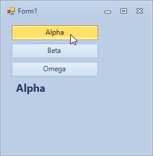

Use these simple step by step guides to learn more about using the Krypton
suite.
| Using Krypton in Visual Studio 2022 |
Using Images With Buttons |
| Follow these simple steps to add the Krypton set of components to the Toolbox in Visual Studio 2022. |
See how to quickly achieve the look and feel you want using one of these simple techniques. These apply to KryptonButton, KryptonCheckButton and ButtonSpec. |
| Embedding Palette Definitions |
Multiple Choice Buttons |
| Embed palette definition XML files into your assembly resources and then load them at runtime. This deployment method reduces the risk of the user deleting your palette definition files. |
Learn how to add a group of mutually exclusive buttons to your application. Combine the KryptonCheckSet with KryptonCheckButton instances in just a few seconds! |
 |
 |
| Three Pane Application |
Expanding HeaderGroups (Splitters) |
| Starting from a new project you learn how to build a simple three pane application using the Krypton Toolkit controls. Use this as a starting point for building up your application. |
Allow the user to expand and collapse header groups at runtime. This variation uses split containers so the user can change the relative spacing of the groups. |
 |
 |
| Expanding HeaderGroups (DockStyle) |
Expanding HeaderGroups (Stack) |
| Allow the user to expand and collapse header groups at runtime. In this variation the groups are docked against the form edges and not a single line of code is needed. |
Allow the user to expand and collapse header groups at runtime. The header groups use up space from the center group as they expand. Create this scenario without a single line of code. |
 |
 |
Krypton Navigator Tutorials
| User Page Creation |
| Add Internet Explorer 7 style operation by having a minimum of two pages and clicking the last page creates another page automatically. |
 |